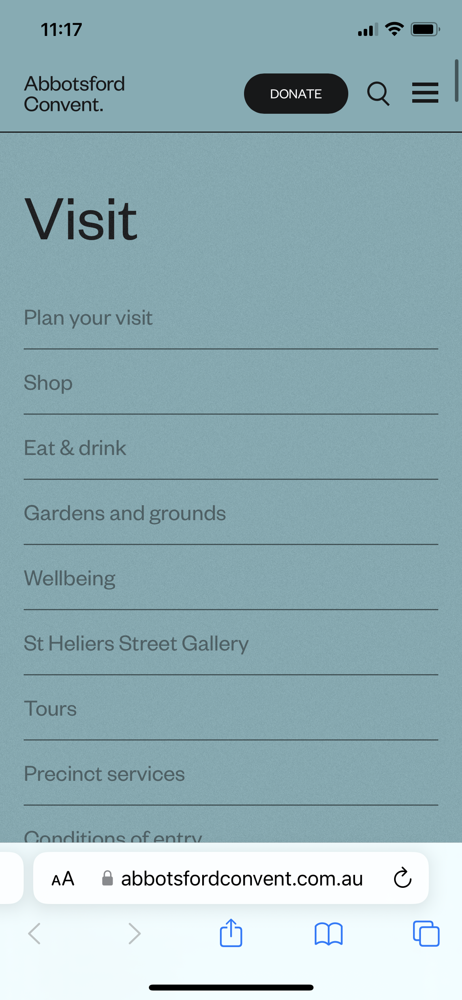
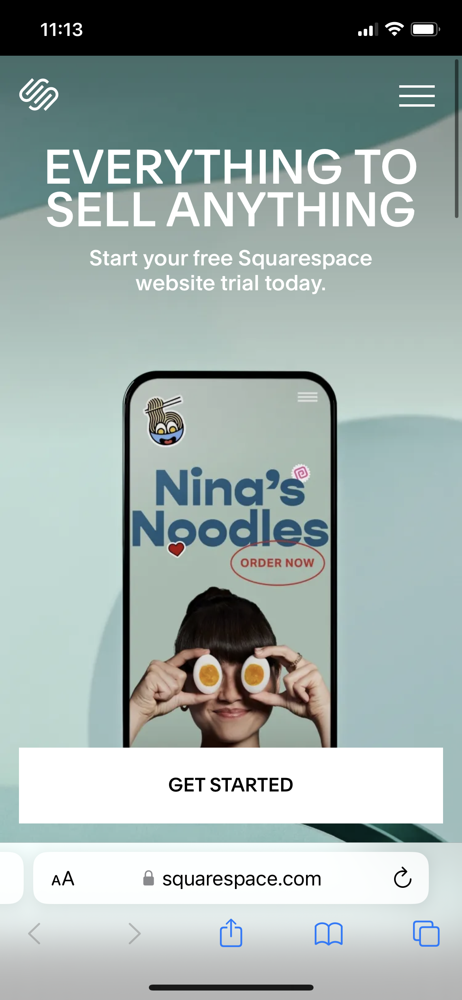
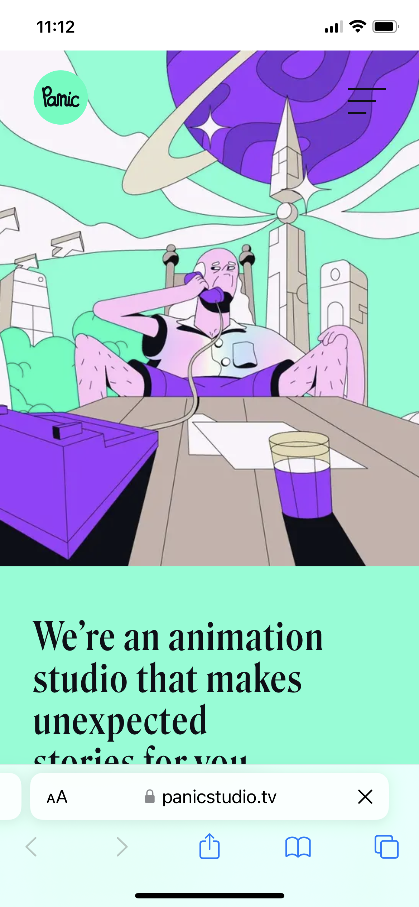

Alignment
Abbots Ford Convent
https://abbotsfordconvent.com.au/visit/ Alignment is very important for a website because it gives the website structure and can help improve the user's experience. There are a lot of benefits to using alignment. It helps with the readability of the site and creates unity within the webpage. There are lots of different ways to align items. You can left, right, top and bottom align items. I picked this site for alignment because I think it is unique. I like that it uses a left align for most of the elements of the page. I like how on the phone view the menu that first pops up has the text left aligned. The alignment used on this webpage makes everything feel organized and unified. I think that this webpage is a really good example of alignment and how it can take your webpage to the next level.
White Space
Squarespace
https://www.squarespace.com/ Having a good amount of white space and a clean design will elevate a webpage. It makes it look organized. Without proper white space a website can feel cluttered and messy. Elements on the page start to feel squished together. When we use appropriate white space it creates a better experience for the users. Also having a clean design makes others want to continue to visit your site. I picked this webpage because it does a good job of having things spaced out nicely on the desktop and mobile version. When I visit their site it feels organized and clean because of their use of white space. Nothing looks cramped together. I think they did an excellent job of using white space in an appropriate manner.
Contrast
Panic Studio
https://panicstudio.tv/ Contrast on a site can enhance the overall view of the site and the experience others have. Contrast is not just about color but also about size, shapes, images and content used on the page. Contrast can make the page easier to read by creating a difference between the background and foreground. When a website uses poor contrast it creates a poor experience for its users. If you visit a site and cannot read the contents of it you are most likely not going to visit the site again, that is why proper contrast is important. I liked this site for contrast because it generates different images on the homescreen and they all have different uses of contrast. I like that they use different color schemes to create contrast and also different sized objects. It makes the website fun and enjoyable to visit.